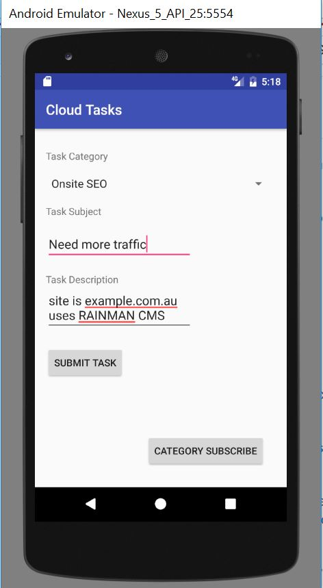

Description
Submit and receive tasks via your mobile phone
The source code is under the android folder, you will need to setup google-serverices and build the apk yourself.
Create tasks from mobile phone

Users can download a copy of your app by going to [websiteurl]/cloud/task/download and submit tasks via thier mobile phone.
Find a bug or need support? send an email to steven@sythiltech.com.au